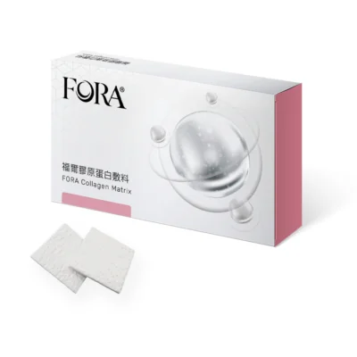

FORA Collagen Matrix
衛部醫器製字第008318號
福爾膠原蛋白敷料採用去細胞處理之膠原蛋白材料，能吸收傷口滲出液並維持濕潤的癒合環境，有助於表淺層傷口的覆蓋與保護。提供片狀、粉狀、柱狀及塊狀等多種規格，方便依不同傷口型態選用。
吸收傷口滲出液、維持濕潤癒合環境，協助表淺傷口修復。
經去細胞處理，生物相容性佳。
提供片狀、粉狀、柱狀及塊狀等規格，因應不同傷口型態。
適用於表淺層傷口的覆蓋與保護。
⚠ 使用說明
本產品為醫療器材，供牙科專業醫療人員於臨床使用。詳細規格、尺寸、適應症、使用方式與禁忌，請以原廠仿單與專業醫師評估為準。
歡迎與愷樂生醫業務團隊聯繫，提供診所、牙醫與醫療機構採購諮詢。